Create The Edge Sales & Proposal Development Training Guide · 2026 Edition
K
File Naming, Organization & Systems
A proposal that cannot be found is a proposal that was never written. This module is the filing discipline that lets any person at Create The Edge locate any document, in any project, in seconds, from draft through signed contract.
Create The Edge Associates, Inc. · [Company Address] · Internal Use Only · 2026
MODULE K · BRIEFINGS
Watch and Listen
Section Briefings
Watch the walkthrough on the filing system, listen to the deep dive on the file naming rules, then study the module for the detail. The same filing discipline in three formats.
Video · File Naming, Organization & Systems
The filing system walkthrough: naming conventions, version control, and the three-day cadence.
Audio · File Naming Rules
The full file naming and organization walkthrough, narrated.
Module K · Infographic
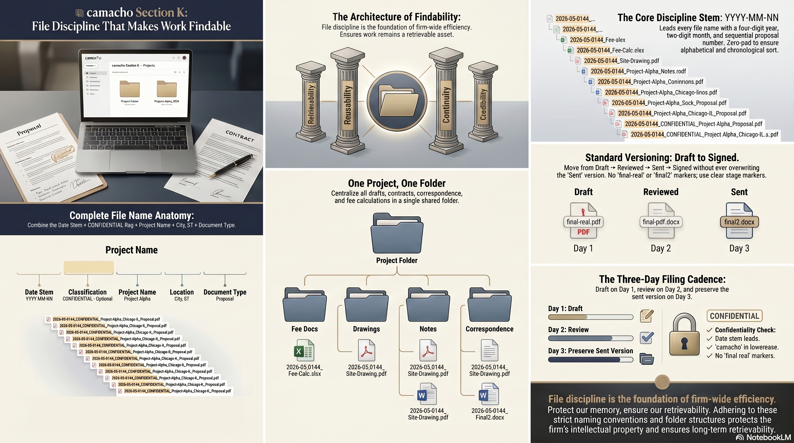
Module K · Concept Mind Map
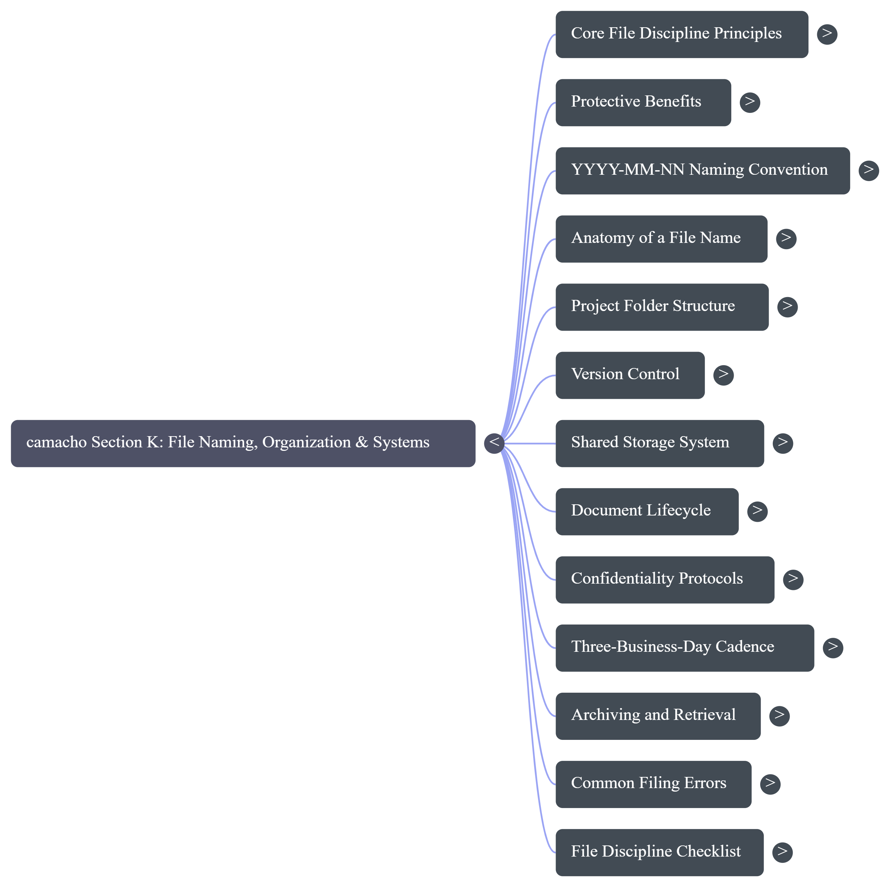
MODULE K · PRESENTATION
Full Slide Deck
The Digital Vault
The complete presentation for this module. Each slide is embedded directly. Scroll through all 21 slides below.
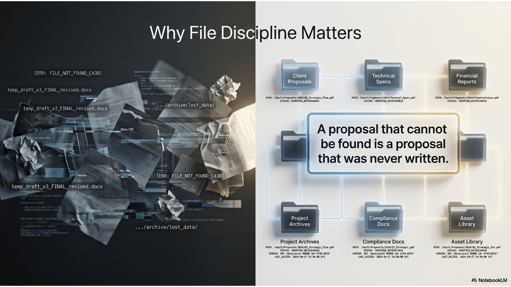
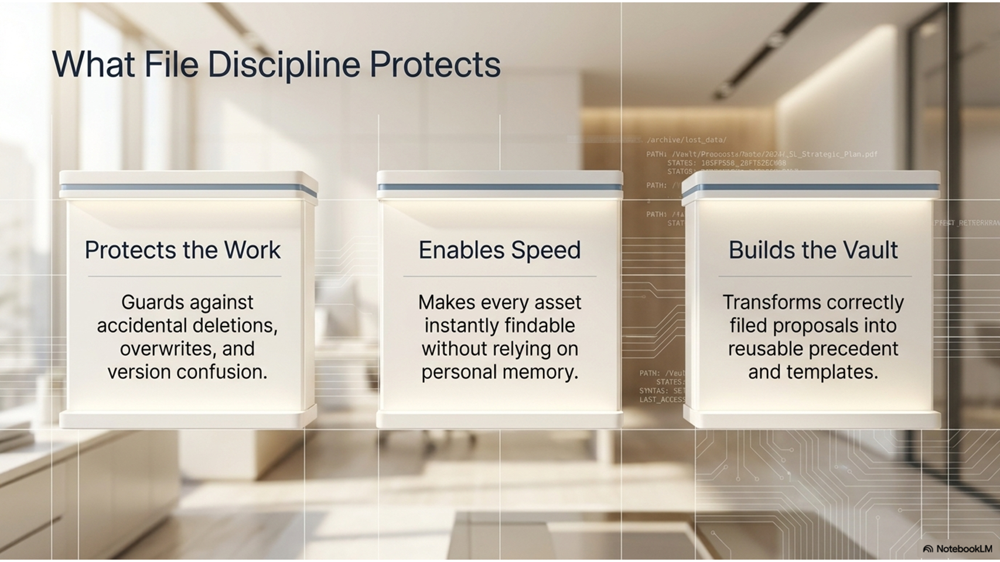
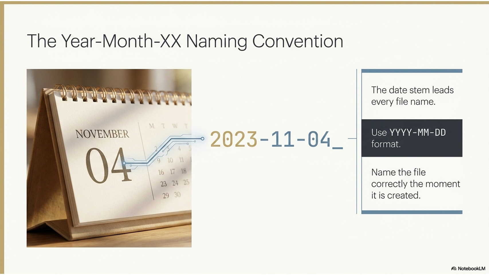
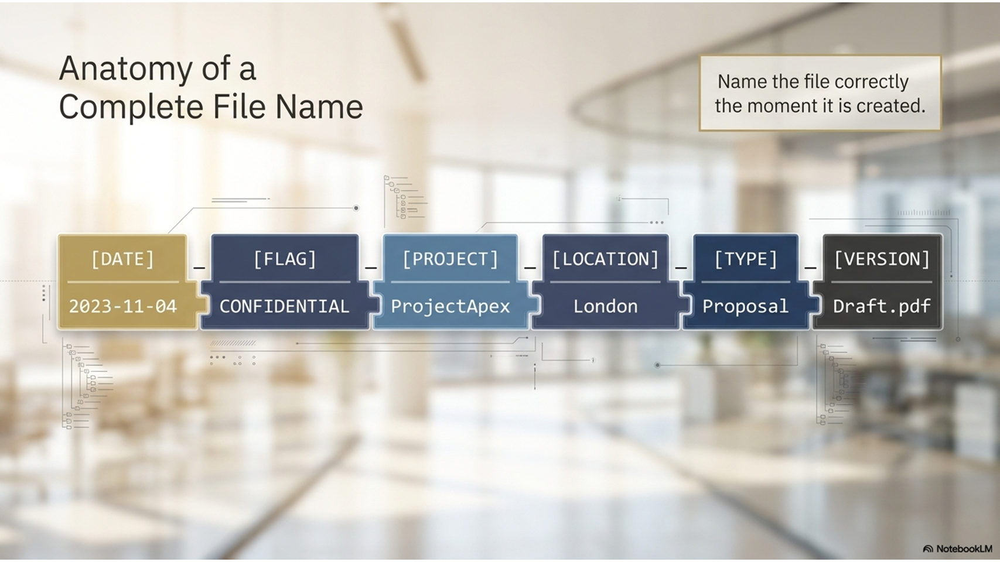
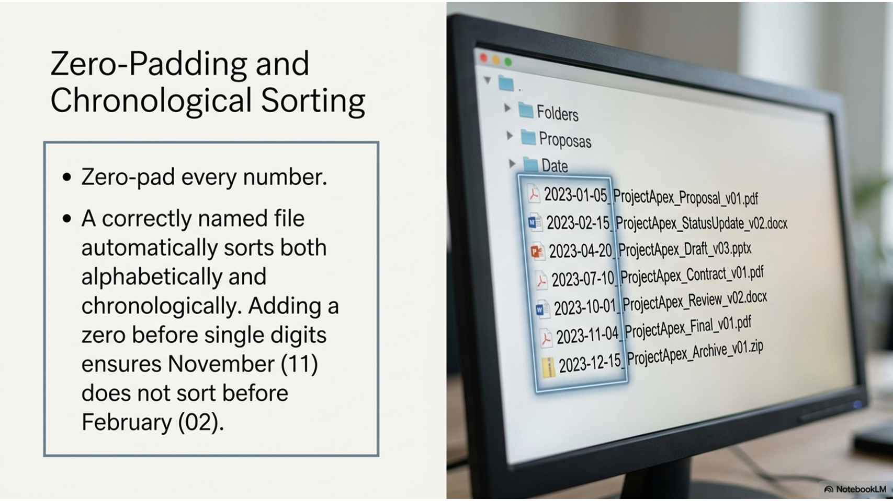
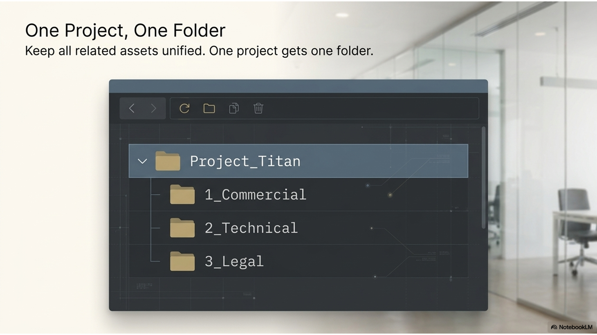
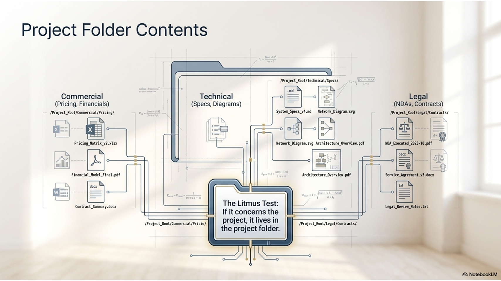
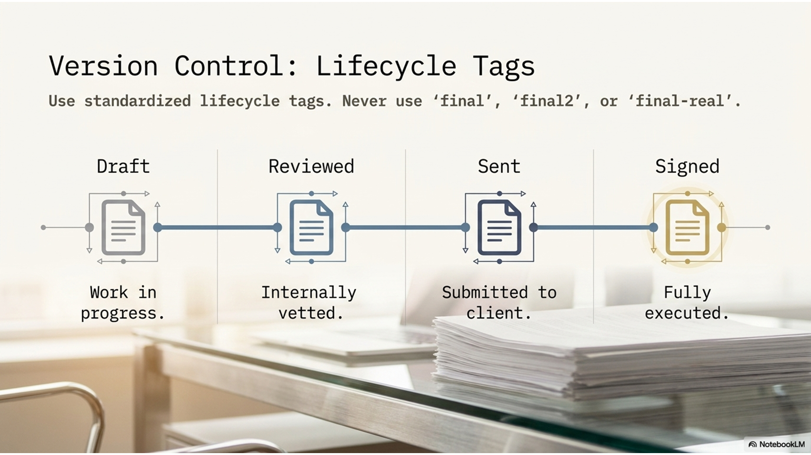
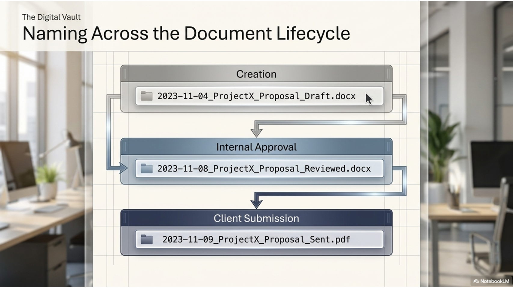
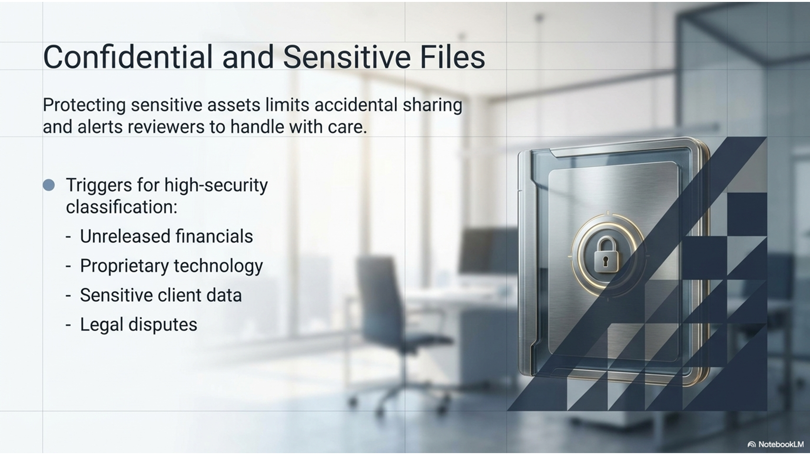
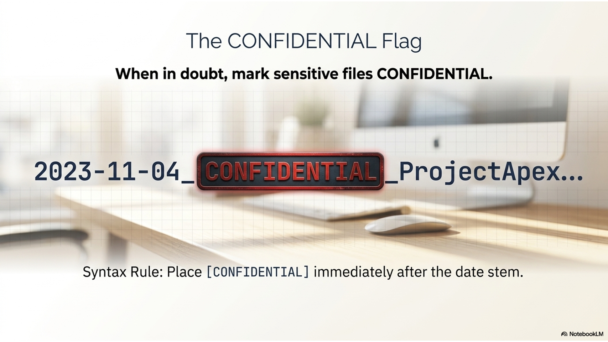
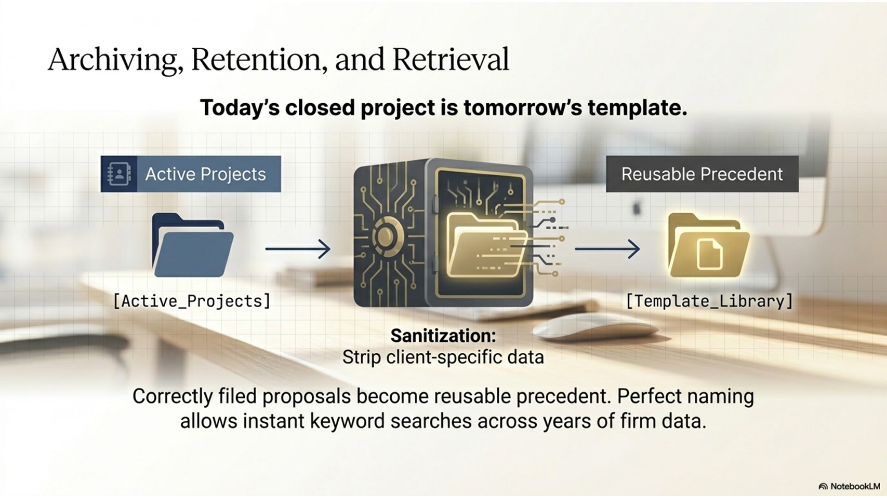
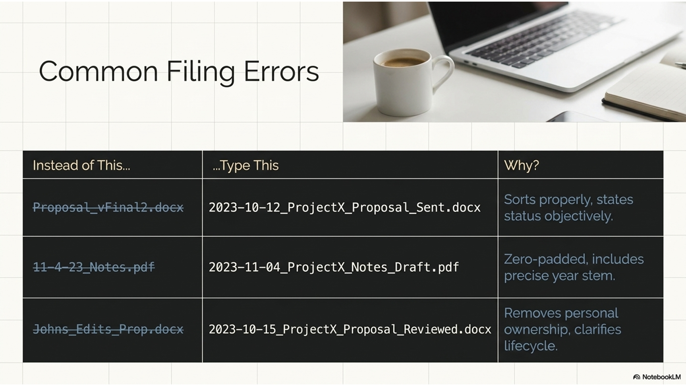
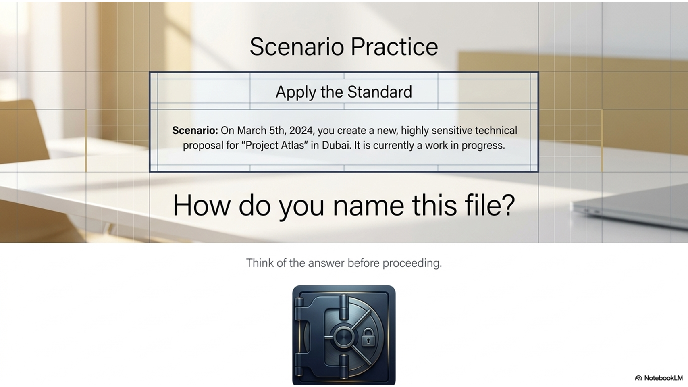
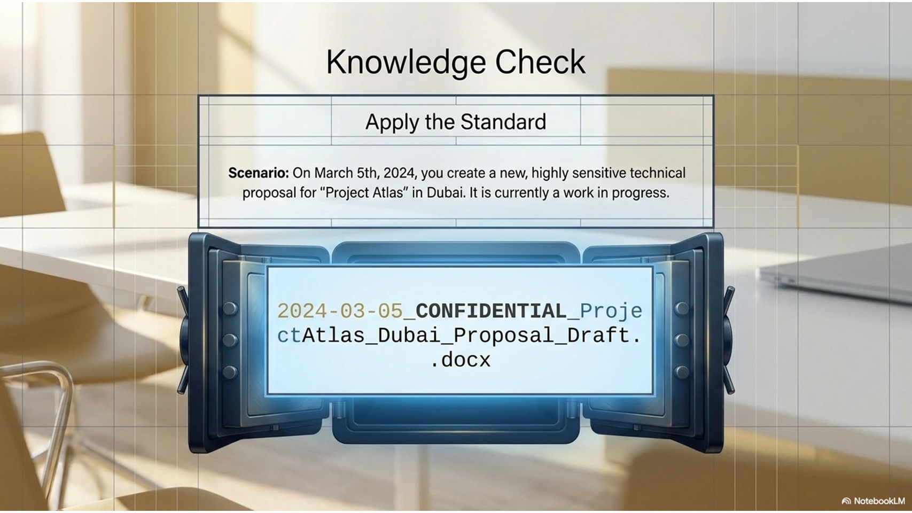
MODULE K · FOUNDATIONS
K.0 · Overview
Why File Discipline Decides Whether Work Can Be Found
The best proposal in the firm is worthless if no one can find it when the client calls back. File discipline is not clerical work. It is the system that turns one person's effort into something the whole firm can rely on, today and three years from now.
Every proposal, scope, fee table, and contract Create The Edge produces becomes part of the firm's institutional memory only if it can be found again. A document saved with a random name in the wrong folder is functionally lost: the hours that went into it cannot be reused, the precedent it sets cannot be cited, and the next person who needs it rebuilds it from scratch. File discipline is what separates a firm that compounds its knowledge from one that repeats its work.
This module codifies the conventions that make every Create The Edge document findable: the Year-Month-XX naming standard introduced in Section G, the project folder structure, the way a file is named and versioned from first draft through signed contract, how confidential work is protected, and the filing cadence that keeps the system current. These are not suggestions. They are the operating standard, and the cost of ignoring them is measured in lost hours and lost documents.
❞ Expert Insight
"The proposal you cannot find in two minutes might as well not exist. When a client calls about a project from eighteen months ago, the person who named the file correctly looks like a professional, and the person who did not is still searching while the client waits."
· David H. Maister, Managing the Professional Service Firm
Figure K.0.1 · What File Discipline Protects
1
Protects
Retrievability
Any document can be found by anyone in the firm, in seconds, without asking the person who made it. The name and the folder do the work.
2
Protects
Reusability
Past proposals become templates and precedents. Effort spent once is reused many times, which is the foundation of the firm's speed.
3
Protects
Continuity
When someone is out or moves on, the work does not leave with them. The system holds the knowledge, not a single person's memory.
4
Protects
Credibility
A firm that produces the right document instantly looks competent. One that hunts through unnamed files in front of a client does not.
▦ Rule of the House
Name the file correctly the moment it is created, not later. A file named right at creation is never lost. A file named later is named only if someone remembers, and the one nobody remembers to rename is the one nobody can find when it matters.
MODULE K · FOUNDATIONS
K.1 · The Naming Convention
The Year-Month-XX Naming Convention
Every Create The Edge file begins with the same date-based stem. It is alphabetical and chronological at the same time, which means a folder sorted by name is automatically sorted by time.
The core of the system is the Year-Month-XX convention introduced in Section G. Every proposal file is named in the format YYYY-MM-NN, where YYYY is the year, MM is the two-digit month, and NN is the sequential number of that proposal within the month. Because the date leads, sorting a folder alphabetically also sorts it chronologically. There is no separate step to organize by date; the name does it automatically.
Figure K.1.1 · The Convention Decoded
Segment
Meaning
Example
YYYY
Four-digit year the proposal was created
2026
MM
Two-digit month, zero-padded
05
NN
Sequential proposal number for that month
01, 02, 44
Full stem
The combined date-sequence prefix
2026-05-0144
✓ Best Practice
Zero-pad every number. Write 2026-05, not 2026-5, and 01 rather than 1. Padding is what keeps the alphabetical sort and the chronological sort identical. Without it, a folder sorts 1, 10, 11, 2, which scatters the timeline and defeats the entire purpose of leading with the date.
☰ From the Files
The Year-Month-XX convention is alphabetical and chronological at once. A reviewer scanning the project folder sees every proposal in the order it was created without sorting by anything other than name. This is why the date leads the file name and never trails it.
MODULE K · FOUNDATIONS
K.2 · Anatomy of a File Name
Anatomy of a Complete File Name
The date stem is only the start. A complete Create The Edge file name carries the confidentiality flag, the project, the location, and the document type, so the name alone tells you everything before you open it.
A full file name extends the date stem with the information a reader needs to identify the document without opening it. After the date sequence comes a confidentiality flag where required, then the project name, the location in US state abbreviation form, and the document type. A name built this way is a complete label: anyone scanning the folder knows what each file is, who it concerns, and whether it is sensitive, at a glance.
Figure K.2.1 · A Complete File Name, Part by Part
Part
Purpose
Example Fragment
Date stem
Chronological and sequential identity
2026-05-0144
Confidential flag
Marks sensitive files so they are handled with care
CONFIDENTIAL
Project name
The client or project the document concerns
Regional Restaurant Client
Location
City and US state abbreviation
Atlanta, GA
Document type
What the file is
Food and Bev Design - Fee Proposal
✓ Best Practice
Use US state abbreviations in file names, never the full state spelled out. GA, not Georgia. NC, not North Carolina. This keeps names compact and consistent with the convention used across every proposal and project record in the firm.
⚠ Common Failure
Burying the date in the middle of the name or dropping it entirely in favor of just the project name. A file named only "Regional Restaurant Client Proposal" cannot be placed in time, cannot be sequenced against other proposals that month, and will not sort correctly. The date stem leads, every time.
MODULE K · STRUCTURE AND VERSIONING
K.3 · The Project Folder
The Project Folder Structure
A correctly named file still needs the right home. Every project has a folder, and every document for that project lives in it, so the whole history of an engagement sits in one place.
The file name identifies the document; the folder structure groups documents by the project they belong to. Each engagement has a single project folder, and everything that engagement produces, the proposal, the scope, the fee table, correspondence, the signed contract, lives inside it. The result is that the complete history of a project sits in one location, and no one has to assemble it from scattered files when a question comes up months later.
Figure K.3.1 · What Lives in a Project Folder
Contents
Why It Belongs There
The proposal and fee documents
The priced offer and the math behind it, kept with the project they priced
The scope of work
The defined deliverables, where they can be checked against the contract
Correspondence and discovery notes
The record of what was confirmed and decided, in context
The signed contract
The executed agreement, filed with everything that led to it
Drawings and supporting files
The technical record tied to the same engagement
▦ Rule of the House
One project, one folder, everything inside it. A document saved outside its project folder is a document that will be looked for in the folder and not found. If it concerns the project, it lives in the project folder, with no exceptions for convenience.
☰ From the Files
When a signed package comes back, it is filed in the project folder under the Year-Month-XX naming convention alongside the proposal that produced it. The draft, the sent proposal, and the signed contract all carry the same date stem and sit together, so the full arc of the engagement reads in one glance.
MODULE K · STRUCTURE AND VERSIONING
K.4 · Version Control
Version Control: Draft Through Signed Contract
A proposal is not one file. It is a series of versions from first draft to signed contract, and the naming has to make clear which version is current without anyone guessing.
Every proposal moves through stages: an internal draft, the version reviewed by [Department Manager] and [Company Owner], the version sent to the client, and finally the signed contract. The filing convention carries through all of them, with the same date stem so they stay together, and a clear marker of stage so the current version is never in doubt. The goal is that anyone opening the folder can tell at a glance which file is the live one and which are superseded.
Figure K.4.1 · The Version Progression
1
Stage
Draft
The working version, named with the date stem and marked as a draft. This is where the proposal is built before it goes to review.
2
Stage
Reviewed
The version after [Department Manager] and [Company Owner] review. Edits from review are incorporated here before anything goes to the client.
3
Stage
Sent
The version delivered to the client. This is the record of exactly what was offered and at what fee.
4
Stage
Signed
The executed contract, filed alongside the proposal that produced it under the same date stem.
▦ Rule of the House
Never overwrite the sent version. Once a proposal goes to the client, that file is the record of what was offered and stays unchanged. Further edits become a new version. Overwriting the sent file destroys the only evidence of what the client actually received.
⚠ Common Failure
Naming versions "final," then "final2," then "final-real." This tells no one which file is current and buries the actual live version in a pile of look-alikes. The date stem plus a clear stage marker removes the guesswork that "final" naming creates.
MODULE K · STRUCTURE AND VERSIONING
K.5 · The Storage System
The Storage System and Where Files Live
Naming and folders only work if everyone saves to the same place. The firm's shared storage is the single source of truth, and a file that lives only on a laptop is a file the firm does not have.
A naming convention is only as good as the storage everyone shares. Create The Edge keeps project files in the firm's shared storage system, not on individual desktops or personal drives. A document saved only to a local machine is invisible to everyone else and lost the moment that machine is unavailable. Saving to the shared system is what makes the naming and folder conventions actually function, because the whole firm is looking at the same set of files.
Figure K.5.1 · Where a File Should and Should Not Live
Location
Verdict
Why
Shared project folder
Correct
Visible to the firm, backed up, findable by anyone
Local desktop
Wrong
Invisible to others, not backed up, lost if the machine fails
Personal email as attachment
Wrong
Not a filing system; cannot be browsed or searched by the team
Loose in a shared drive root
Wrong
Outside any project folder; will not be found where it is expected
▦ Rule of the House
If it is not in the shared system, the firm does not have it. Work in progress saved only to a laptop does not count as filed. Save to the shared project folder from the start, so the document is part of the firm's record the moment it exists.
✓ Best Practice
Save to the shared folder first and work from there, rather than working locally and uploading at the end. The end-of-day upload is the step that gets skipped under deadline pressure, and the skipped upload is the file that goes missing. Working in the shared location from the start removes that risk entirely.
MODULE K · STRUCTURE AND VERSIONING
K.6 · The Document Lifecycle
Naming Across the Document Lifecycle
A single engagement produces several document types: the proposal, the scope, the fee table, the contract. Each carries the same date stem so they group together, with the document type making each one distinct.
One project generates more than a proposal. There is the cover letter and proposal, the scope of work, the fee calculation, supporting correspondence, and the eventual contract. The convention keeps them unified by carrying the same date stem across all of them, while the document-type portion of the name keeps each one distinct. The whole set sorts together in the folder, and the type label tells you which is which without opening anything.
Figure K.6.1 · Document Types Under One Date Stem
Document
Role in the Engagement
Cover letter and proposal
The priced offer and the narrative that frames it
Scope of work
The defined deliverables, phase by phase
Fee calculation
The working math behind the fee, kept for defense and reference
Correspondence
The record of what was asked, answered, and agreed
Signed contract
The executed agreement that closes the loop
✓ Best Practice
Keep the date stem identical across every document for one proposal, and let the document type be the only thing that changes between them. This is what makes the full set sort together and read as a single engagement rather than scattering across the folder as unrelated files.
☰ From the Files
The fee calculation is filed with the proposal it produced, not kept separately. When a client questions a number months later, the math sits beside the offer, and the person answering can defend the fee from the same folder rather than reconstructing how it was built.
MODULE K · PROTECTION AND CADENCE
K.7 · Confidential Files
Handling Confidential and Sensitive Files
Some projects are confidential before they are public. The file name itself carries the flag, so anyone who sees the file knows to handle it with care before they ever open it.
Not every project is public knowledge. A new restaurant location, an unannounced renovation, or a sensitive client relationship may be confidential until the client says otherwise. The convention handles this by carrying a CONFIDENTIAL flag in the file name itself, placed right after the date stem. The marker travels with the file everywhere it goes, so the sensitivity is visible at the folder level, before anyone opens the document or forwards it.
Figure K.7.1 · How the Confidential Flag Works
Practice
Effect
Flag in the file name
Sensitivity is visible before the file is opened or sent
Flag travels with the file
The marker is not lost when the file is copied or moved
Restricted sharing
Confidential files go only to those who need them, never broadly
Removed only on client clearance
The flag comes off when the client confirms the project is public
▦ Rule of the House
When in doubt, mark it confidential. The cost of an unnecessary flag is nothing; the cost of a leaked unannounced project is a damaged client relationship. Add the flag when sensitivity is even possible, and remove it only when the client confirms the project is public.
⚠ Common Failure
Forwarding a confidential file without noticing the flag. The marker exists precisely so this does not happen, but it only works if people read the name before they send. Check the file name for the flag before any file leaves the firm, and confirm the recipient is cleared to receive it.
MODULE K · PROTECTION AND CADENCE
K.8 · Filing Cadence
The Three-Business-Day Turnaround and Filing Cadence
The filing system runs on a rhythm. The firm's standard is a proposal in the client's inbox within three business days of the request, and the filing happens as part of that rhythm, not after it.
Create The Edge's standard turnaround from RFP receipt to a proposal in the client's inbox is three business days. Filing is built into that cadence rather than treated as cleanup afterward. The file is named and saved to the project folder when it is created, the sent version is preserved when it goes out, and the signed contract is filed when it returns. Because filing happens at each step, the record is always current and nothing is left to a later catch-up pass that may never come.
Figure K.8.1 · Filing Within the Three-Day Cadence
1
Day 1
Create and Name
On receipt, the draft is created in the shared project folder with the correct date-stem name. Filing starts at the first keystroke.
2
Day 2
Review
The reviewed version is saved in place, edits incorporated, the live version always clearly identified in the folder.
3
Day 3
Send and Preserve
The pre-flight check runs, the proposal is sent, and the sent version is preserved unchanged as the record of what was offered.
4
On Return
File the Signed
When the contract is signed, it is filed in the same folder under the same date stem, closing the engagement record.
✓ Best Practice
File as you go, not at the end. Filing folded into each step of the three-day cadence is filing that actually happens. The separate "I will organize it later" pass is the one that competes with the next deadline and loses, leaving the record incomplete.
❞ Expert Insight
"The three-day turnaround only works because the filing is part of it, not a chore saved for Friday. Name it when you make it, file it when you send it, and the system is always current without anyone running a cleanup."
· Alan Weiss, Million Dollar Consulting
MODULE K · PROTECTION AND CADENCE
K.9 · Archiving and Retrieval
Archiving, Retention, and Retrieval
A project does not end when the contract is signed. The record has to stay retrievable for years, because the call that needs it most often comes long after the work is done.
Completed projects move from active to archived, but archived is not gone. A client may call about a kitchen Create The Edge designed years earlier, an architect may reference a past engagement, or the firm may want to reuse a proven approach. Because every file was named with the Year-Month-XX convention and kept in its project folder, retrieval years later is a search, not an excavation. The discipline applied at creation is what makes the document findable long after everyone has forgotten the details.
Figure K.9.1 · Why Naming Pays Off at Retrieval
At Creation
At Retrieval Years Later
Named with the date stem
Found by year and month in seconds
Filed in the project folder
The whole engagement is in one place
Document type in the name
The right file is identified without opening several
Confidential flag preserved
Sensitivity is still visible, even years on
☰ From the Files
The proposals filed correctly become the firm's library of precedent. When a similar project arrives, the closest past engagement is retrieved by date and project, and its proposal becomes the starting template. The hour spent naming and filing it correctly is repaid every time it is reused.
✓ Best Practice
Treat every file as something a stranger will need to find in three years. The person retrieving it may not be you, and they will not have your memory of the project. The name and the folder are the only clues they get, so make them carry the full story.
MODULE K · DISCIPLINE
K.10 · Common Errors
Common Filing Errors and Their Cost
The same handful of filing mistakes recur, and each one has a concrete cost measured in lost time, lost documents, or lost credibility. Knowing them by name is how you avoid them.
Filing failures are predictable. The same errors appear again and again, and each one carries a real cost the moment a document needs to be found. The table below maps the recurring mistakes to what they cost the firm, so the discipline is not abstract: each rule in this module exists to prevent a specific, expensive failure.
Figure K.10.1 · Filing Errors and What They Cost
Error
What It Costs
No date stem in the name
The file cannot be placed in time or found by date later
Numbers not zero-padded
The folder sorts out of order, scattering the timeline
Saved to a local desktop
Invisible to the firm and lost if the machine fails
Saved outside the project folder
Not found where it is expected; effectively missing
"final," "final2," "final-real"
No one can tell which version is current
Overwriting the sent version
The record of what the client received is destroyed
Missing confidential flag
A sensitive file is forwarded without anyone realizing
⚠ Common Failure
The most expensive error is the one that looks harmless: saving "just this once" to the desktop under deadline pressure, meaning to file it properly later. Later does not come, the file is never in the shared system, and weeks afterward no one can find the work that was actually done. Save it right the first time.
▦ Rule of the House
Every error in this list is prevented by one habit: name it correctly and save it to the shared project folder at the moment of creation. The discipline is small and takes seconds. The cost of skipping it is paid later, by someone, at the worst possible time.
MODULE K · DISCIPLINE
K.11 · The Checklist
The File Discipline Checklist
The whole section reduces to a short checklist run on every file. It is the same discipline as the fee defense checklist in Section H and the compliance checklist in Section I, applied to filing.
File discipline is a habit, and habits hold when they are reduced to a checklist run every time. The list below consolidates Section K into the few checks that matter on every document. Run it as the file is created and again before it is sent, and the filing system stays current and complete without any separate cleanup effort.
Figure K.11.1 · The File Discipline Check
Confirm at Creation
Name starts with the Year-Month-XX date stem (YYYY-MM-NN)
All numbers zero-padded so name sort equals time sort
Confidential flag added if the project is sensitive
Project name and US state abbreviation in the name
Document type clear in the name
Saved to the shared project folder, not a local drive
Confirm Before Sending
Current version is unambiguous; no "final2" confusion
Sent version will be preserved, not overwritten later
Confidential flag checked before the file leaves the firm
Recipient is cleared to receive a flagged file
Fee calculation filed with the proposal it produced
Create The Edge lowercase; no name placeholders remain
▦ Rule of the House
If a file fails any item on this list, it is not filed correctly, regardless of how good the document inside it is. The quality of the work and the discipline of the filing are separate things, and the firm needs both. A brilliant proposal that cannot be found helps no one.
❞ Expert Insight
"File naming feels like the smallest thing in the firm until the day it is the only thing that matters. The person who can produce the right document in ten seconds, two years later, is the person the client trusts with the next project."
· Peter F. Drucker, The Effective Executive
MODULE K · ASSESSMENT
✓ Comprehensive Test
Fifteen Questions on File Naming and Systems
Fifteen questions across all twelve sub-modules. Each has one correct answer. Work through them in one sitting, mark your answers, then check against the answer legend. A passing score is twelve correct. Below ten, re-read the sub-modules referenced in the legend.
1
The Create The Edge file naming convention leads with:
AThe project name
BThe date stem in Year-Month-XX format
CThe client's initials
DThe document type
2
The Year-Month-XX convention is valuable because it is:
AShorter than other formats
BAlphabetical and chronological at the same time
CEasier to type
DRequired by the client
3
Why must numbers in the file name be zero-padded (05, not 5)?
AIt looks more professional
BSo the alphabetical sort matches the chronological sort
CThe software requires it
DIt is not actually necessary
4
In the format 2026-05-0144, the "44" portion represents:
AThe day of the month
BThe sequential proposal number for that month
CThe client's ID
DThe fee in thousands
5
Locations in file names should be written as:
AThe full state name spelled out
BUS state abbreviations (GA, NC, FL)
CZip codes
DLeft out entirely
6
How many folders does a single project use?
AOne folder holding everything for that project
BA separate folder for each document type
CNone; files are loose in the drive root
DOne per person working on it
7
Once a proposal has been sent to the client, the sent file should be:
AOverwritten with any later edits
BPreserved unchanged as the record of what was offered
CDeleted to save space
DMoved out of the project folder
8
The problem with naming versions "final," "final2," "final-real" is that:
AThe names are too long
BNo one can tell which version is current
CThey sort alphabetically
DThere is no problem
9
A file saved only to a local desktop is a problem because:
ADesktops are slower
BIt is invisible to the firm and lost if the machine fails
CIt cannot be printed
DIt uses too much storage
10
The CONFIDENTIAL flag is placed:
AInside the document only
BIn the file name itself, after the date stem
CIn a separate spreadsheet
DNowhere; it is remembered
11
When you are unsure whether a project is sensitive, you should:
ALeave the flag off to avoid clutter
BMark it confidential until the client confirms it is public
CAsk every person in the firm first
DDelete the file
12
Create The Edge's standard turnaround from RFP receipt to proposal in the client's inbox is:
ASame day
BThree business days
CTwo weeks
DWhenever it is ready
13
Filing should happen:
AAs a weekly cleanup pass
BAs part of each step, named at creation and filed when sent
COnly after the contract is signed
DWhenever there is free time
14
Correctly named and filed past proposals are valuable later because they:
ATake up space
BBecome the firm's library of retrievable precedent and templates
CCan be deleted safely
DAre only useful to the original author
15
The single habit that prevents nearly every filing error is:
ACleaning up the drive monthly
BNaming correctly and saving to the shared folder at the moment of creation
CEmailing files to yourself
DKeeping a personal copy
MODULE K · ASSESSMENT
☑ Answer Legend · Part 1 of 2
Answers and Explanations · Questions 1 through 8
The correct answer is given for each question, followed by the reasoning and a cross-reference to the sub-module where the concept was taught. If an explanation surprises you, return to the source sub-module and re-read with the answer in hand.
Question 1
Correct: B · The date stem in Year-Month-XX format
Every file name leads with the date stem. Because the date comes first, sorting by name sorts by time, which is the entire point of the convention. See K.1.
Question 2
Correct: B · Alphabetical and chronological at the same time
A folder sorted alphabetically by a date-led name is automatically sorted chronologically. There is no separate sort step; the name does the work. See K.1.
Question 3
Correct: B · So the alphabetical sort matches the chronological sort
Without zero-padding, a folder sorts 1, 10, 11, 2, scattering the timeline. Padding (01, 02) keeps the alphabetical and chronological orders identical. See K.1.
Question 4
Correct: B · The sequential proposal number for that month
In YYYY-MM-NN, the NN is the sequential number of that proposal within the month, not the day. It distinguishes multiple proposals created in the same month. See K.1.
Question 5
Correct: B · US state abbreviations (GA, NC, FL)
File names use US state abbreviations, never the full state spelled out. This keeps names compact and consistent across every record in the firm. See K.2.
Question 6
Correct: A · One folder holding everything for that project
One project, one folder, everything inside it. The complete history of an engagement sits in a single location so no one has to assemble it from scattered files. See K.3.
Question 7
Correct: B · Preserved unchanged as the record of what was offered
The sent version is the evidence of exactly what the client received. Overwriting it destroys that record. Later edits become a new version instead. See K.4.
Question 8
Correct: B · No one can tell which version is current
"final," "final2," "final-real" buries the live version among look-alikes. The date stem plus a clear stage marker removes the guesswork. See K.4.
MODULE K · ASSESSMENT
☑ Answer Legend · Part 2 of 2
Answers and Explanations · Questions 9 through 15
The remaining answers, with reasoning and sub-module cross-references. Review every question you missed against its source sub-module before moving on to the flashcards.
Question 9
Correct: B · It is invisible to the firm and lost if the machine fails
A file on a local desktop is not in the shared system, so the firm effectively does not have it, and it disappears if the machine fails. Save to the shared folder from the start. See K.5.
Question 10
Correct: B · In the file name itself, after the date stem
The CONFIDENTIAL flag lives in the file name, right after the date stem, so sensitivity is visible at the folder level before anyone opens or forwards the file. See K.7.
Question 11
Correct: B · Mark it confidential until the client confirms it is public
An unnecessary flag costs nothing; a leaked unannounced project costs a relationship. When in doubt, flag it, and remove the flag only on client clearance. See K.7.
Question 12
Correct: B · Three business days
The firm's standard turnaround from RFP receipt to a proposal in the client's inbox is three business days, and filing is built into that cadence. See K.8.
Question 13
Correct: B · As part of each step, named at creation and filed when sent
Filing folded into each step actually happens; the separate "organize it later" pass competes with the next deadline and loses. File as you go. See K.8.
Question 14
Correct: B · Become the firm's library of retrievable precedent and templates
Correctly filed proposals are retrieved by date and project years later and reused as templates. The effort spent naming them is repaid every time. See K.9.
Question 15
Correct: B · Naming correctly and saving to the shared folder at the moment of creation
Every filing error is prevented by one habit: name it right and save it to the shared project folder when it is created. The discipline takes seconds; skipping it is paid for later. See K.10 and K.11.
MODULE K · STUDY TOOLS
◆ Flashcards · Reference Grid
Twelve Cards · Front and Back
Twelve flashcards covering the working vocabulary of Section K. Read the front, recall the back, then check. The interactive flip cards on the next page are for active practice.
1Year-Month-XX Convention
Every file is named YYYY-MM-NN. The date leads, so a name sort is also a time sort. Alphabetical and chronological at once.
(K.1)
2The NN Segment
The sequential proposal number for that month, not the day. Distinguishes multiple proposals created in the same month.
(K.1)
3Zero-Padding
Write 05 not 5, 01 not 1. Keeps the alphabetical sort identical to the chronological sort. Without it the timeline scatters.
(K.1)
4File Name Anatomy
Date stem, then confidential flag if needed, then project, then city and US state abbreviation, then document type.
(K.2)
5One Project, One Folder
Everything for an engagement lives in a single project folder. The whole history sits in one place.
(K.3)
6Version Stages
Draft, reviewed, sent, signed. Same date stem throughout, clear stage marker, so the current version is never in doubt.
(K.4)
7Never Overwrite the Sent Version
The sent file is the record of what the client received. Later edits become a new version; the sent file stays unchanged.
(K.4)
8Shared Storage Is Truth
If it is not in the shared system, the firm does not have it. Save to the shared project folder from the start, not the desktop.
(K.5)
9The Confidential Flag
CONFIDENTIAL sits in the file name after the date stem. Visible before the file is opened. When in doubt, flag it.
(K.7)
10Three-Day Turnaround
RFP receipt to client inbox in three business days, with filing built into the cadence rather than saved for later.
(K.8)
11File As You Go
Name at creation, preserve when sent, file the signed contract on return. Filing folded into each step actually happens.
(K.8)
12Naming Pays Off at Retrieval
Correctly named files are found years later in seconds and reused as templates. The library of precedent is built one file at a time.
(K.9)
MODULE K · STUDY TOOLS
□ Flashcards · Interactive
Tap the Card to See the Answer
The same twelve cards, one at a time. Read the front, attempt the back from memory, then tap to check.
Term · Tap to Reveal
Year-Month-XX Convention
Every file is named YYYY-MM-NN. The date leads, so a name sort is also a time sort. Alphabetical and chronological at once. (K.1)
Tap card to flip · Use arrows to navigate
1 of 12
MODULE K · STUDY TOOLS
✂ Printable Cut-Out Study Cards
Print, Cut, Carry
Twelve cards arranged for printing. Cut along the borders. Keep them on your desk. Within thirty days, the filing discipline will be muscle memory.
Year-Month-XX Convention
Name files YYYY-MM-NN. Date leads, so name sort equals time sort. Alphabetical and chronological at once.
The NN Segment
The sequential proposal number for that month, not the day. Distinguishes proposals made the same month.
Zero-Padding
05 not 5, 01 not 1. Keeps alphabetical and chronological sort identical. Without it the timeline scatters.
File Name Anatomy
Date stem, confidential flag if needed, project, city and US state abbreviation, document type.
One Project, One Folder
Everything for an engagement lives in a single project folder. The whole history in one place.
Version Stages
Draft, reviewed, sent, signed. Same date stem, clear stage marker. Current version never in doubt.
Never Overwrite the Sent Version
The sent file is the record of what the client received. Later edits become a new version.
Shared Storage Is Truth
If it is not in the shared system, the firm does not have it. Save to the shared folder from the start.
The Confidential Flag
CONFIDENTIAL in the file name after the date stem. Visible before opening. When in doubt, flag it.
Three-Day Turnaround
RFP receipt to client inbox in three business days. Filing built into the cadence, not saved for later.
File As You Go
Name at creation, preserve when sent, file the signed on return. Filing folded into each step happens.
Naming Pays Off at Retrieval
Correctly named files are found years later in seconds and reused as templates. Precedent, one file at a time.